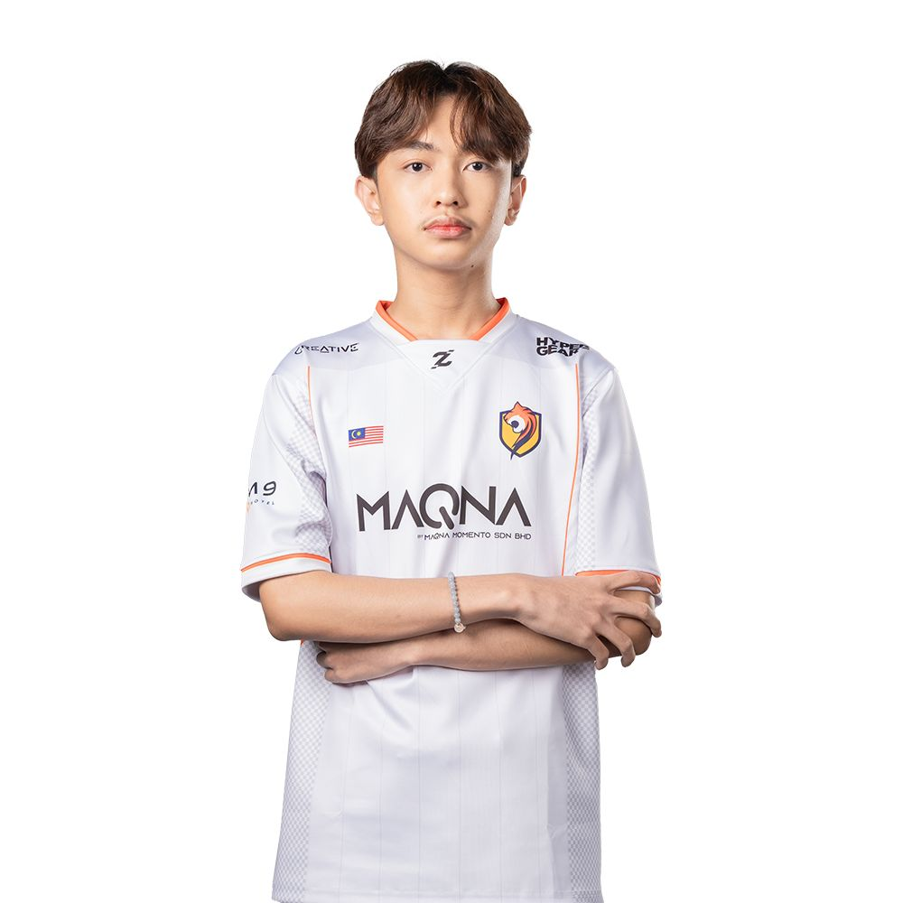

IDLAN NAUFAL BIN IRWAN NURSHAH
Web Developer
Profile
Motivated IT student with strong foundations in web development, troubleshooting, and cybersecurity basics. Looking for internship opportunities to enhance practical skills.
Personal Information
- Email: naufal1609@gmail.com
- Phone: 016-576-5995
- Location: Selangor, Malaysia
Technical Skills
- HTML & CSS
- Java Programming
- Microsoft Office
- Networking Basics
- Phyton
Education
Diploma in Information Technology (2025-2027) — Universiti Kuala Lumpur Malaysian Institute Of Information Technology (2025–2027)
Experience
Competitive E-sport player (2023-2024) — SEM9.GG
- Practice consistently to improve game mechanics and strategies.
- Collaborate with team members to develop effective communication and teamwork skills.
- Participate in local and online tournaments to gain competitive experience.
- Analyze gameplay footage to identify areas for improvement and implement feedback.
- Stay updated with the latest game patches and meta changes to adapt strategies accordingly.